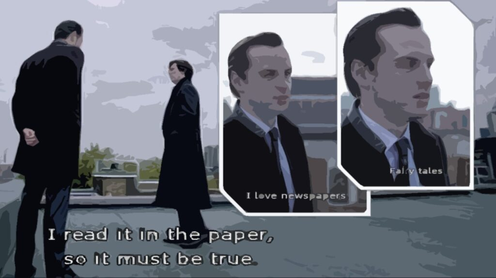
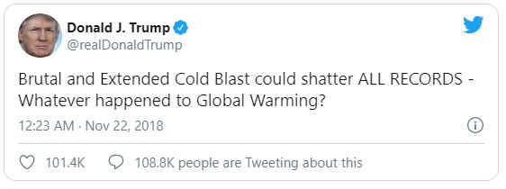

我们这个时代最需要的，不仅是医学上对病毒的群体免疫，更是心智上对假新闻的群体免疫。
一、我们这个时代
“I read it in the papers so it must be true” – Jim Moriarty
“连报纸都这么写，那它肯定是真的啦” – 詹姆斯·莫里亚蒂

由英国BBC出品的现代版福尔摩斯的探案故事里，莫里亚蒂为了搞臭神探福尔摩斯（Sherlock Holmes）的名声，捏造了一系列 “福尔摩斯是个骗子” 的假新闻，逼得福尔摩斯不得不跳楼装死了整整两年才得以洗白。
福尔摩斯的故事虽是虚构，却反映了我们所处的时代背景 —— 我们生活在一个信息过剩、真假难辨的时代。
随着自媒体的发展和传统媒体的转型，我们的手机每天都会推送成千上万条新消息。这其中有奇迹抗癌的“超级食物”，有骇人听闻的新冠后遗症，也有对世界经济的爆炸性预测。
这些信息乍一看去干货满满，但是其中有多少是有理有据、辩证客观的真相，又有多少是经不住逻辑推敲和时间考验的假新闻呢？
二、什么是假新闻？
如今我们常给网上流传的各色虚假及误导信息冠以“假新闻”（Fake news) 的标签。
假新闻通常有政治动机或商业目的，以捏造或是故意隐瞒等手段有意识地误导读者。在这个流量为王的时代，点击量的多少成为了许多从中谋利的人来判断信息“价值”最直观的标准。虚假言论没有了现实框架的约束，则显得越发离奇、抓人眼球，比真实的信息传播得更广更快。
在网上流传的假新闻真假难辨，但通常以标题党和选择性报道两种形式来误导读者。
标题党，形容网络中使用夸张耸动的标题来骗取点击量的文章。读者若只浏览标题，没有细读文章内容来判断信息的真伪，就容易被标题误导。
疫情当前，我们随手一翻微信群聊就可以看到各种被疯狂转发的标题党文章——比如，“WHO：第二波疫情将在9月份来袭至少5000万人死亡”、“如何发现无症状感染者？专家：看脚趾头！年轻人要多加留意！” 等。这类文章的标题看着吓人，但是内容却缺乏证据支持。比如 “WHO：第二波疫情将在9月份来袭至少5000万人死亡” 这篇文章说世界卫生组织于6月27日声称因为新型冠状病毒肺炎的表现与西班牙流感相类似，所以疫情将在夏季衰退，但会在今年9-10月份卷土重来，并在这第二波疫情里造成全球至少5000万人死亡。首先，世卫组织的这个声明我在官网搜不到。如果该声明属实，文中应当引用消息的来源。再者，文中所描述的这个因果关系是不成立的。即便1918年西班牙流感病毒在今天重现，由于现在的世界格局、医学水平、人口分布和社会的互动模式与100年前有很大的差别，西班牙流感的历史很难完全重演。文章对第二波时间和预期死亡人数的声明也没有任何证据或数学模型支持，只是想当然地引用了西班牙流感第二波疫情的时间轴，以及西班牙流感三波疫情的总死亡人数 [1]。
相比标题党的文章，选择性报道的新闻会更难辨认、更隐蔽地破坏互联网的生态健康，误导人们的认知。这类文章通常在政治或商业上有偏见，以符合作者信仰或利益的方式有选择地进行报道。例如不愿相信全球气候变暖的人会有选择地传播 “气候没变暖” 的消息来支持他们的主张。特朗普宣布美国单方面退出《巴黎协定》，在推特上推送例如 “今年冬天真冷，哪来的全球变暖” 之类的话，只字不提统计上全球气候比工业化前变暖近1度，并将持续变暖的事实 [2]。

又如在新冠疫情初期，媒体在没有临床证据的情况下报道了双黄连可以抑制新冠病毒的新闻，造成了公众抢购双黄连的不理智行为 [3]。一时之间，不仅双黄连口服液脱销，连兽用双黄连也成了热销商品。幸好闹剧没有持续多久，许多专家平台纷纷出来辟谣，才使得“双黄连热”迅速降温。
三、为什么我们会轻信捏造的或是有误导性的新闻？
姚脑师以为有两个主要原因。
一是这类新闻通常真假参半，要分辨起来特别费劲。我们的大脑天生懒惰，不愿意花功夫仔细研究每篇文章，更愿意相信 “这是微信上转的文章，所以它一定被验证过是真的。”
二是我们的大脑容易受确认偏差（confirmation bias）的影响。如果大脑先接受了虚假的信息，建立了错误的认知，之后就倾向于相信和该认知相符的假新闻，而不愿意接受和认知相反的客观事实了。
1998年，英国医生安德鲁·威克菲尔德（Andrew Wakefield）在医学杂志《Lancet》发文说麻疹、腮腺炎和风疹疫苗（MMR vaccine）可能会导致自闭症。《Lancet》是医学界最有权威的学术杂志。此文一出，人们奔走相告，导致幼童接种MMR疫苗的比率下降，在世界数个地区造成了麻疹疫情的爆发。后来一个叫布莱恩·迪尔（Brian Deer）的记者深入调查了该研究，发现威克菲尔德和他发的文章有很大的利益冲突——生产MMR疫苗的公司抢了他自己做的麻疹疫苗的生意，因此这篇文章很可能就是要把MMR疫苗搞臭。之后英国综合医学委员会（British General Medical Council）发现了威克菲尔德学术造假、医德不端，在2010年吊销了他的行医执照。《Lancet》杂志随后也撤回了1998年他的文章。
为了验证威克菲尔德的说法，科学家后来做了一系列研究。例如，和威克菲尔德研究的12个儿童相比，2014年在《疫苗》杂志发表的一项元分析（meta-analysis）审查了一系列相关研究，一共涉及130万人，发现儿童自闭症发病率跟接种MMR疫苗没有任何关系 [4]。
然而由于确认偏差的存在，如今依然有家长拒绝为子女接种疫苗。“接种疫苗导致自闭症” 的说法先入为主，在家长们的脑海里深深扎根。他们在判断信息真伪的时候会更愿意相信那些 “疫苗有副作用” 的片面或虚假信息，而不愿意接受与自己先前的认知相反的科学证据。
四、如何有效辨别新闻的真假？
要想辨别假新闻我们要学会批判地阅读，通过检查信息来源和独立思考来判断新闻内容的真伪。但这是个体力活，姚脑师是不推荐优先考虑的。我们在决定读新闻之前，应当先决定自己需不需要新闻，再决定看什么样的新闻，最后才考虑怎么判断新闻的真假。
我们在拿起手机刷新闻之前可以先问问自己看新闻对实现自己的人生目标是否有帮助，具体看什么样的新闻对自己有帮助。比如姚脑师作为一个科研工作者，日常新闻对我的科研进展帮助甚微。与其在手机屏幕后 “关心时事”，我觉得把自己力所能及的科研做好更能实现自己的社会价值。这样做有两个好处，一是我省下了时间做更有意义的事情，二是我可以避免盲目刷新闻时不小心被虚假信息洗脑，建立不健康的确认偏差。
当我真正需要信息来做决定的时候，比如何时回校进实验室，或是做未来的旅行计划，我可能需要关注一下当下新冠疫情的情况，或是新冠疫苗临床试验的进展。在阅读和筛选信息的时候，姚脑师建议大家尝试以下四个步骤，或许能对你有所帮助：
1. 检查作者背景。
这篇文章是谁写的？是哪个媒体发表的？他们有没有相应的资质和专业素养对该话题发声？他们与所撰写的内容是否有任何利益相关？如果作者是一个有信用背书和专业资格的个体，并与撰写内容没有利益相关，那该文章的内容在概率上更有可能是客观公正、经得起推敲的。如果作者没有任何信用背书，那姚脑师会建议直接略过该信息。
2. 阅读全文。
一旦选中了看过去信得过的文章，请把整篇文章读完，而不是只看标题或是引言。这是因为标题和引言旨在吸引你的注意，激发你的情感。那些客观的事实和数据通常出现在文章的后面。
3.检查逻辑和证据。
我们阅读全篇文章后，应当判断该文章提出的观点有没有逻辑或是证据支持。如果该文章的观点是基于客观事实和科学证据并由该领域的专家给出，那这些观点相对而言会更客观更有用一些。
4.询问专业人士。
即使是有理有据的文章也可能有选择性地引用某些证据来支持自己的观点。要想对一个问题做出客观系统的把握，最好的方法是询问该领域的专家。专家通过长年的积累已经对自己的专业领域建立了系统的认知，能够快速地判断出一条信息是否具有误导性。如果你有这样的朋友，问问他们的意见或许就能让你豁然开朗，茅塞顿开。
如果大家都能够有选择的摄入信息、批判地阅读、理性地思考，建立起心智上的群体免疫，或许未来我们的互联网会变得更友好更健康。
参考材料
1 https://www.cdc.gov/flu/pandemic-resources/1918-commemoration/pandemic-timeline-1918.htm 2 https://www.bbc.co.uk/news/science-environment-46384067 3 https://m.chinanews.com/wap/detail/sp/sp/shipin/cns/2020/02-02/news9076140.shtml 4 Wessel, L. (2017). Vaccine myths. Science, 356(6336), 368–372. 5 https://edition.cnn.com/2020/06/28/health/fauci-coronavirus-vaccine-contact-tracing-aspen/index.html